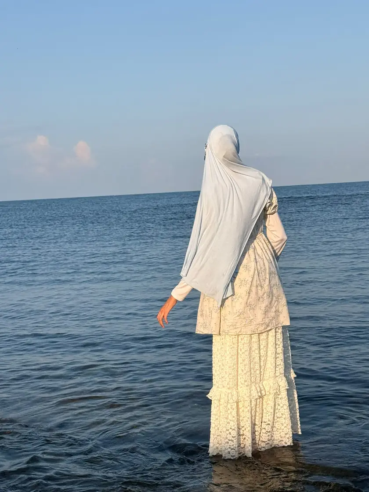

Level 01 / 03
Anfang
Meine Mutter brauchte eine Website für ihre Arbeit. Ich habe mich entschieden, sie selbst zu entwickeln.
Ich bin 15 und baue Websites. Alles beginnt mit einer Idee und hebt mit Code ab.
Technik · Ideen · Neugier
ScrollenEine Frage
Warum sollte ein Blatt Papier nicht fliegen oder schwimmen können?
Ich halte es für wichtig, Gedanken nicht zu früh einzuschränken. Denn aus einer ungewöhnlichen Idee kann etwas Wertvolles entstehen.

Fahr mit der Maus über das Foto: Die Lupe verwandelt den Bereich in Code.Tippe aufs Foto und streiche darüber: Die Lupe verwandelt den Bereich in Code.
Über mich
Ich bin 15 Jahre alt und beschäftige mich mit Webentwicklung, Technik und kreativen Ideen. Kreativität endet für mich nicht bei Software: Sie reicht von Hardware und Robotik bis zu Erfindungen, die den Alltag erleichtern.
Meine Interessen
Technik ist nicht alles, was mich beschäftigt. Es gibt viel auf dieser Welt, das man entdecken, verstehen oder selbst erschaffen kann.
Software, Hardware und Robotik: Mich interessiert alles, was man konstruieren und testen kann.
Ich lese viel und schreibe eigene Bücher und Kurzgeschichten.
Von der Natur bis zum Sternenhimmel: Ich möchte verstehen, wie die Welt funktioniert.
Draußen und in Bewegung finde ich den Ausgleich zur Arbeit am Bildschirm.
Ich will verstehen, wie die Welt geworden ist, und mitreden, wie es weitergeht.
Ich verfolge eigene Ideen konsequent und lerne ständig dazu.
Mein Weg in die Webentwicklung
Level 01 / 03
Meine Mutter brauchte eine Website für ihre Arbeit. Ich habe mich entschieden, sie selbst zu entwickeln.
Level 02 / 03
Mit jedem Schritt kamen neue Funktionen hinzu: Terminkalender, Klientenportal, Zahlungsseite und Bewertungen.
Level 03 / 03
Technik und Programmieren sind heute ein fester Teil meines Lebens. Ich lerne weiter und setze eigene Ideen um.
„Aus einem Projekt wurde ein Hobby, daraus eine Leidenschaft.“
Meine Projekte
Mit jedem neuen Projekt wächst die Sammlung.
Mein erstes Projekt: Terminkalender, Klientenportal, Zahlungsseite, Bewertungen und ein Chat-Assistent.
Website öffnen ↗Vokabeln lernen wie im Spiel: Wörter lernen, Münzen sammeln, das eigene Tier und Zimmer gestalten. Mit Lernplan, Minispielen und Foto-Scan.
App öffnen ↗03Das nächste Projekt ist unterwegs…
Nahaufnahme
Die Website für die Arbeit meiner Mutter war mein erstes Projekt. Ich habe sie mit HTML, CSS und JavaScript geschrieben, die erste Version komplett von Grund auf. Der Demo-Assistent daneben zeigt die Logik des Chats auf dieser Seite.
Feedback
Dein Feedback ist mir wichtig. Jeder Kommentar hilft mir, besser zu werden.